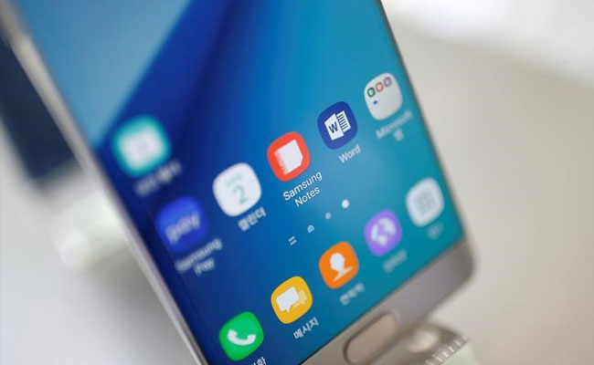

International news
Petrol, Diesel Prices Hiked Sharply On Rise In Global Rates
Petrol price was on Saturday hiked by Rs. 1.34 per litre while diesel rate was increased by Rs. 2.37 per litre. Revised rates will take effect from midnight.The hike announced by oil companies is excluding state levies.After the price revision, a litre of petrol in Delhi will now cost Rs. 66.45 per litre, while diesel will cost Rs. 55.38 per litre.Also, petrol prices in the other major cities will be: Rs. 69.08/litre in Kolkata; Rs. 72.83/litre in Mumbai, and Rs. 65.96/litre in Chennai. And, diesel prices will be: Rs. 57.64/litre in Kolkata; Rs. 61.05/litre in Mumbai, and Rs. 56.95/litre in Chennai. "The current level of international product prices of petrol and diesel and Rupee-Dollar exchange rate warrant increase in selling price of petrol and diesel, the impact of which is being passed on to the consumers with this price revision," Indian Oil Corp (IOC) said in a statement. Pakistan ambassador to the US Jalil Abbas Jilani told a group of reporters here at an award ceremony held on the sidelines of the annual fall meeting of the World Bank and the International Monetary Fund.
The movement of prices in the international oil market and Rupee-Dollar exchange rate shall continue to be monitored closely and developing trends of the market will be reflected in future price changes, it added.
Global oil prices have jumped to one-year highs of above $50 a barrel on growing expectations of an output cut by major oil producers.
Petrol and diesel prices are deregulated in India, which means they are linked to market rates.
State-owned fuel retailers Indian Oil Corp (IOC), Bharat Petroleum Corp and Hindustan Petroleum Corp revise rates of the fuel on a fortnightly basis based on the average oil price and foreign exchange rate in the preceding fortnight.
Prices were last revised on October 4, when the rate of petrol was increased by 14 paise to Rs. 64.72 per litre while that of diesel was hiked by Rs. 10 paise to Rs. 52.61 per litre in the national capital. The prices were increased following increase in commission paid to dealers.
SoftBank Names Rajeev Misra As Head Of $100 Billion Tech Fund
Dubai/Tokyo: Saudi Arabia and Japan's SoftBank Group will create a technology investment fund that could grow as large as $100 billion, making it one of the world's largest private equity investors and a potential kingpin in the industry.
The move is part of a series of dramatic business initiatives launched by Riyadh this year as Saudi Arabia, its economy hurt by low oil prices, deploys huge financial reserves in an effort to move into non-oil industries.
The project will be led for SoftBank by Rajeev Misra, the group's head of strategic finance and who joined the Japanese firm in 2014 from Fortress Investment Group, a private equity and hedge fund group. Saudi Arabia's top sovereign wealth fund, the Public Investment Fund (PIF), will engage its own team.
Mr Misra was a senior managing director and partner in the Fortress' London office and served as global head of fixed income, currencies and commodities (FICC) at UBS between 2009 and 2013. Prior to that, he spent over 10 years at Deutsche Bank as global head of the fixed income division. He has B.S. in mechnanical engineering, an M.S. in Computer Science, and an MBA from MIT Sloan School of Management, shows a profile on SoftBank's website. Earlier this year, it invested $3.5 billion in U.S. ride-hailing firm Uber, surprising many.
SoftBank, a $68 billion telecommunications and tech investment behemoth, has also been stepping up investment in new areas. It agreed to buy U.K. chip design firm Arm Holdings in July in Japan's largest ever outbound deal.
PIF will be the lead investment partner and may invest up to $45 billion over the next five years while SoftBank expects to invest at least $25 billion.
Several other large, unnamed investors are in active talks on their participation and could bring the total size of the new fund up to $100 billion, SoftBank said.
"Over the next decade, the SoftBank Vision Fund will be the biggest investor in the technology sector," SoftBank Chairman Masayoshi Son said in a statement. At an annual rate of $20 billion, the new London-based fund could at current levels account for roughly a fifth of global venture capital investment.
In the year to September, venture capital-backed companies globally raised $79 billion, according to data from KPMG and CB Insights, with tech start-ups attracting the lion's share of that cash.
"Son is very good at looking for companies with big growth prospects, and that will create fierce competition," said Hiroyuki Kuroda, secretary general of the Venture Enterprise Center in Japan. Twitter Inc faces an uncertain future after Saleforce.com Inc, the last of the companies believed to be interested in buying the troubled social network, said on Friday that it would not make a bid.
Twitter and Chief Executive Officer Jack Dorsey may now have to chart an independent course in the face of stagnant user growth, heavy losses and mounting competition from the likes of Facebook's Instagram and Snap Inc's Snapchat.
Mr Dorsey is likely to face intense scrutiny over his continued role as CEO of both Twitter and the payment company Square, especially if the company's next quarterly report in late October is as weak as some analysts expect.
Twitter grew rapidly for years after it was founded in 2006, and has assumed a unique and influential position in the global media ecosystem. But the company has been plagued by management turmoil since its earliest days and has long been criticized for a lack of product innovation and, more recently, lack of user growth.
Twitter last month hired bankers to field acquisition offers and companies including Alphabet and Disney expressed interest, according to sources familiar with the process. Google and Disney decided not to proceed, the sources said, leaving Salesforce, a provider of cloud computing software for businesses, as the last reported bidder. But Salesforce investors reacted poorly to the idea, sending the company's stock down when its interest in Twitter first emerged. Salesforce Chief Executive Marc Benioff said on Friday he had ruled out a bid.
"In this case we've walked away. It wasn't the right fit for us," Mr Benioff told the Financial Times in an interview, saying there were many reasons the fit was not right, including price and the culture of the company. A spokeswoman for Salesforce confirmed the comments. Twitter declined to comment.
Twitter's shares closed 5 per cent lower Friday at $16.88, while those of Salesforce rose 5 per cent to $74.27.
Twitter had planned to wrap up any sale discussions by the time it reports earnings at the end of October, sources told Reuters earlier this week. It is still possible that other bidders could emerge, according to people familiar with the matter. One source said the company may consider possible strategic investments rather than a buyout.
With a market cap of about $12 billion and losses running at about $400 million a year, Twitter was likely judged too expensive by prospective buyers. COOPER:Please allow her to respond. She didn't talk while you talked. CLINTON:Yes, that's true, I didn't in the first debate and I'm going to try not to in this debate because I'd like to get to the questions. TRUMP:Get off this question. CLINTONOkay, Donald, I know you're into big diversion tonight, anything to avoid talking about your campaign and the way it's exploding and the way Republicans are leaving you. The debate was less full of obvious bait Clinton wanted Trump to take than the first one; she’s further ahead now and knows she doesn’t need that kind of knockout win again. But needling him for elite Republicans’ abandonment was a nice, and smart, moment. But perhaps the most crucial aspect of Clinton’s performance that succeeded was her defense of her Wall Street speech remarks leaked by WikiLeaks, which suggested that she thought presidents should behave differently in public and private. This is a potentially very harmful story for Clinton that, to her great fortune, came out at the same time as the even more harmful Trump tapes. But they are sure to come up repeatedly as the campaign enters its final stage. New Delhi: For the first time in a decade, Air India has reported an operating profit of Rs. 105 crore in the last fiscal aided by lower fuel costs and rise in passenger numbers.The state-owned airline, which is working on ways to improve its financials, had an operating loss of Rs. 2,636 crore in 2014-15. During its meeting today, the Air India board approved the financial numbers for 2015-16 and the carrier has reported an operating profit of Rs. 105 crore, sources said. This is the first time since 2007 -- when the erstwhile Indian Airlines was merged with Air India -- that the national carrier has eked out an operating profit.Having an operating profit in a decade is an encouraging sign for the airline, which is seeking to turn around its fortunes amid stiff competition, sources said. A decline of nearly 31 per cent in fuel costs in the last financial year compared to the year-ago period was a key factor in the airline becoming operationally profitable.According to the sources, the benefits of lower fuel costs were passed on to passengers, which is also reflected in terms of lower yield during the last fiscal. Yield -- an indicator of ticket prices -- declined by 7.7 per cent.In 2015-16, Air India carried 18 million passengers, registering a growth of 6.6 per cent. In the comparable period, the same stood at 16.88 million, they added. However, in 2015-16, the carrier saw its revenue slide to Rs. 20,526 crore from Rs. 20,613 crore in 2014-15.Indicating improved operating performance, EBITDAR (earnings before interest, tax, depreciation, amortisation and rentals) rose to Rs. 3,587 crore last financial year, from Rs. 1,436 crore in 2014-15.Last fiscal, the airline's capacity deployment and aircraft utilisation went up by 4.8 per cent and 7.5 per cent, respectively.On account of currency fluctuations, the carrier incurred a forex loss Rs. 350 crore in 2015-16.Air India is staying afloat on a Rs. 30,000-crore bailout extended by the government. Mumbai: Samsung Electronics Co on Friday offered alternative phones to its India customers who had pre-ordered its flagship Galaxy Note 7 devices, in a bid to appease loyal clients in one of its largest smartphone markets.The world's largest phone maker has been hit by an avalanche of negative publicity, after being forced to recall millions of the fire-prone Note 7 devices and later scrap the high-end phone altogether.India is one of the world's largest and fastest growing smartphone markets and a critical one for Samsung as it is the No. 1 player in the nation with a roughly 25 percent market share. The device that had been set to go on sale in India in early September ended up not getting to any Indian customers after it failed to resolve overheating problems which caused some of the phones to ignite.The company initially apologised to customers for the delay in the Note 7, and in a release late on Friday it said for those who had pre-booked devices, in lieu of the Note 7 it would offer customers either its Galaxy S7, or S7 Edge devices.It also offered affected clients a free set of its virtual reality headsets, a free pair of wireless headphones, a voucher worth about $50, along with a free one-time screen replacement in case of any damage to the new smartphone within a year. In a separate statement Samsung also questioned analyst estimates on the extent of the impact on revenue in India from the Note 7 debacle."We can confirm that contrary to these reports, we are headed for record sales of mobile phones this year,"the company said in the statement. Earlier on Friday, Samsung said however that it expected to take a hit to its operating profit of about $3 billion over the next two quarters due to the discontinuation of the Galaxy Note 7.
Twitter Charts Solo Path As Salesforce Rules Out Takeover
Air India Posts Operating Profit For First Time In A Decade
Samsung Offers Alternative Phones To Note 7 To Appease India Customers
